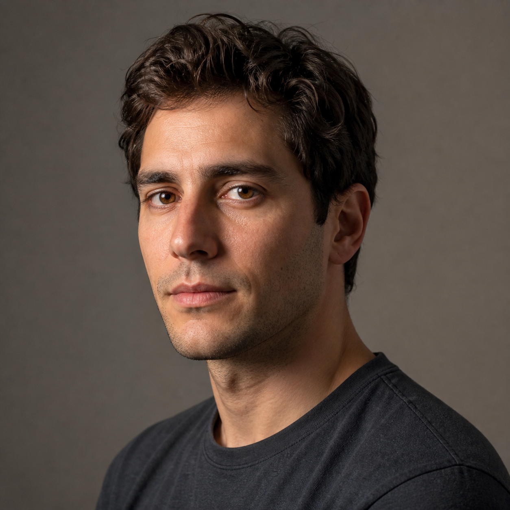

EXPERIMENT 08 · STYLE TRANSFER AS CODE
The same identity, rebuilt in layered marks
The fictional source portrait supplies geometry and local evidence. Code converts it into the visual language of “A portrait imagined by code”: softened volume, directional skin marks, charcoal hair, warm flesh and muted olive.
“Preserve the person and photographic composition. Reconstruct the portrait as a quiet code-made painting with soft analytic volume, restrained horizontal skin marks, dark directional hair strands, warm natural flesh, charcoal shadows, muted olive clothing and sparse identity accents.”
FICTIONAL REFERENCE

CODE PAINTING · 0 / 6
Ready
01 GroundEstablishes restrained background and shoulder silhouette.
02 VolumeCompresses the source into broad color and value masses.
03 Form marksFollows local image gradients with medium directional strokes.
04 IdentityAllocates smaller marks to the face and high-gradient anchors.